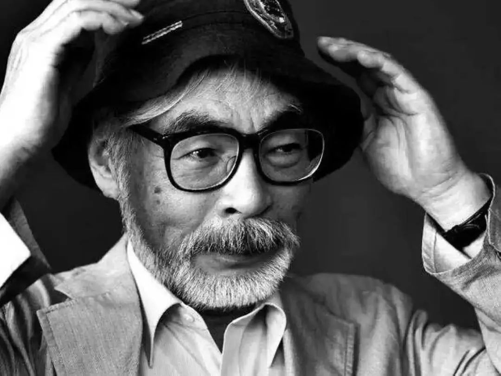

宫崎骏，日本动画师、动画制作人、漫画家、动画导演、动画编剧。1963年进入东映动画公司，从事动画师工作。1971年加入手冢治虫成立的“虫Production动画部”。1974年加入映像与高畑勋、小田部羊一共同创作《阿尔卑斯山的少女》。1979年转入东京电影新社创作了自己首部电影《鲁邦三世卡里奥斯特罗之城》。1982年开始独立创作漫画，在《Animage》上连载漫画《风之谷》，该作品获得第23届日本漫画家协会赏。1984年执导《风之谷》，该片获得罗马奇幻电影节最佳动画短片奖等4项大奖。
1985年与高畑勋、铃木敏夫共同创立吉卜力工作室。1986年执导《天空之城》，该片获得第41回每日电影奖大藤信郎赏等6项大奖。1988年执导《龙猫》，该片荣获第13回报知电影奖最佳导演奖等24项大奖。1997年执导《幽灵公主》，该片荣获第21届日本电影学院奖最佳影片奖等27项大奖。2001年执导《千与千寻》，该片荣获第75届奥斯卡金像奖最佳动画长片奖、第52届柏林国际电影节金熊奖等9项大奖。2004年执导《哈尔的移动城堡》，该片荣获第9届好莱坞电影奖最佳动画片奖等8项大奖。
荣获第37届日本电影学院奖最优秀动画作品奖等8项大奖 2014年11月8日荣获第87届奥斯卡金像奖终身成就奖。
火は一日で森を灰にするが 水と風は１００年かけて森を育てる
たとえどんなきっかけで生まれようと生命は同じです
--《風の谷のナウシカ》
土に根を下ろし、風と共に生きよう。種と共に冬を越え、鳥と共に春を歌おう。
--《天空の城ラピュタ》
いつの間にこんなに大きくなって…うまく行かなかったら帰って来てもいいんだよ。
--《魔女の宅急便》
一度あったことは忘れないものさ?想い出せないだけで。
--《千と千寻の神隠し》